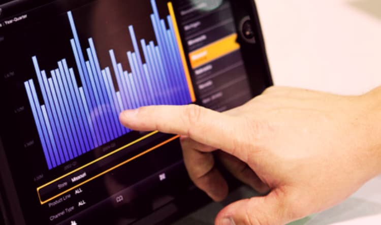

O IFTM campus Uberlândia Centro oferece cursos de graduação em Licenciatura e em Tecnologia. Confira abaixo alguns desses cursos:

No exercício profissional do licenciado em computação estão implícitas: a colaboração com profissionais de diversas áreas, a qualificação e o comprometimento com a gestão do processo de ensino-aprendizagem, a visão da complementaridade do processo educativo, da tecnologia e da ciência da computação, o estímulo à pesquisa, à criação, e ao investimento na própria formação. Tem como objetivo formar professores com uma visão tecnológica em computação, para atuarem na educação básica: ensino fundamental, ensino médio, e ainda na educação profissional técnica de nível médio, na rede de ensino pública e privada.
Entendemos o licenciado em computação, em primeiro lugar, como um profissional ligado ao exercício do diálogo entre as unidades curriculares nos espaços da educação. Como tal, esse profissional agrega-se às equipes de coordenação pedagógica, nas quais atua de início, como um facilitador da introdução de novas tecnologias, não apenas no sentido prático (ou das práticas), mas particularmente no nível da discussão de metodologias e concepções. Nessa qualidade, a sua intervenção no plano das atividades de concepção, planejamento e gestão pedagógicas pode, ou não, ser definida como algo transitório, dependendo da maior ou menor dificuldade de amadurecimento da cultura tecnológica na comunidade em que atua.
Conheça os professores do curso de Licenciatura em Computação:
| Docente | Titulação | Área de atuação | Regime |
|---|---|---|---|
| Bruno Queiroz Pinto | Doutorado | Desenvolvimento de Sistemas | DE |
| Wilton de Paula Filho | Doutorado | Computação 2 | DE |
O curso de Tecnologia em Sistemas para Internet, por meio de seus componentes curriculares e demais atividades acadêmicas, proporcionará ao egresso uma formação com embasamento técnico nas diversas áreas relacionadas aos sistemas para Internet/Intranet/Web, ao mesmo tempo em que visa à formação integral, oportunizando ensino-aprendizado de aspectos científicos, bem como humanos, éticos e cidadãos.
O curso de Tecnologia em Sistemas para Internet, por meio de seus componentes curriculares e demais atividades acadêmicas, proporcionará ao egresso uma formação com embasamento técnico nas diversas áreas relacionadas aos sistemas para Internet/Intranet/Web, ao mesmo tempo em que visa à formação integral, oportunizando ensino-aprendizado de aspectos científicos, bem como humanos, éticos e cidadãos.
Conheça os professores do curso de Sistemas para Internet:
| Docente | Titulação | Área de atuação | Regime |
|---|---|---|---|
| Clarimundo Machado Moraes Junior | Doutorado | Desenvolvimento de Sistemas | DE |
| Wilton de Paula Filho | Doutorado | Computação 2 | DE |